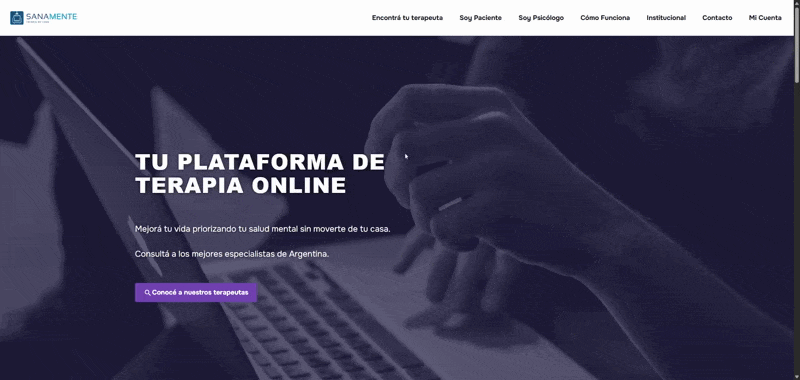
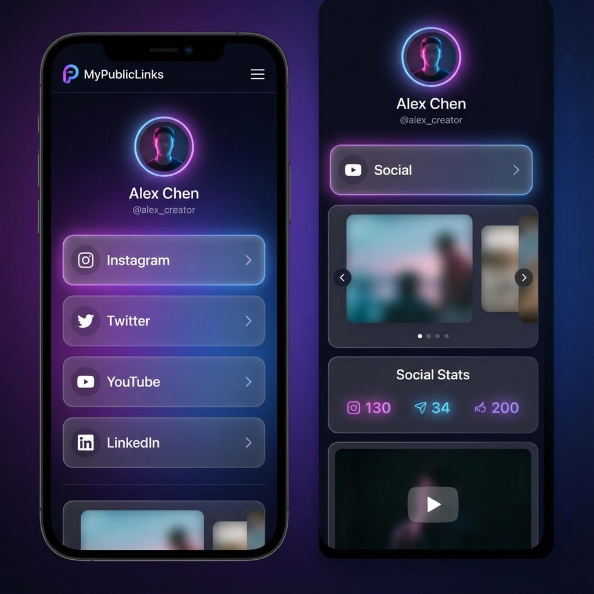

Resumen
Plataforma web que conecta pacientes con psicólogos para gestionar todo el ciclo de atención: registro, perfiles,
agenda y turnos, pagos y retiros, reclamos, calificaciones y administración. Seguridad basada en JWT y control de
roles; UI responsive y notificaciones no intrusivas.
Objetivos
• Mejorar el acceso a atención psicológica online de forma segura.
• Simplificar la gestión operativa para terapeutas y administrativos.
• Centralizar pagos, retiros y métricas del negocio.
• Ofrecer una experiencia clara y moderna para pacientes.
Roles y permisos (RBAC)
AD (Administrativo): control total, métricas y operaciones sensibles.
TE (Terapeuta): perfil, agenda, retiros y funcionalidades afines.
PA (Paciente): perfil, turnos, reclamos y calificaciones.
Autenticación y seguridad
Inicio de sesión con JWT y autorización por roles (middleware requireRol).
Rutas sensibles protegidas, validaciones y limpieza de logs sensibles.
Cambio de contraseña desde el perfil (paciente y terapeuta).
Turnos, agendas, pagos y caja
CRUD de agendas con JWT; vistas por rol y utilidades de disponibilidad.
Expiración de agendas (administrativo).
Webhook público para pagos; conciliación, métricas financieras y retiros (aprobación/rechazo).
Manejo de caja dentro de la app: apertura/cierre, conciliaciones y registro de movimientos.
Sistema de referidos
Generación de enlaces/códigos de referidos, tracking de conversiones y aplicación de beneficios/bonificaciones
según regla de negocio.
Reclamos, calificaciones y catálogo
CRUD administrado y operaciones autenticadas por turno.
Normalización de estados para estadísticas y reportes.
Descuentos, obras sociales y tipos de terapia (gestión administrativa).
Arquitectura y tecnologías
Frontend: React + TypeScript bajo Atomic Design, React‑Bootstrap, CSS Modules tipados, hooks reutilizables y
toasts unificados.
Backend: Node.js + Express, JWT, middleware de roles y rutas modulares (usuarios, terapeutas, pacientes, agendas,
turnos, reclamos, calificaciones, movimientos, descuentos, obras sociales, tipos de terapia, notas).
Integraciones: Daily API para videollamadas; Mercado Pago API para pagos (webhook para conciliación y retiros).
Despliegue
Desplegado con Docker en VPS, utilizando Nginx como reverse proxy para el dominio
sanamenteonline.com.
Calidad, seguridad y mantenibilidad
Separación de responsabilidades, validación de entradas y manejo de errores con mensajes claros (toasts).
Políticas de acceso por rol y protección JWT.

Resumen
Plataforma completa de "Link in Bio" que permite crear perfiles personalizados con enlaces, widgets interactivos,
analíticas avanzadas y sistema de suscripciones. Construida con React, TypeScript, Tailwind CSS y Supabase, ofrece
una experiencia premium con animaciones, plantillas profesionales y pagos integrados.
Objetivos
• Proporcionar una solución completa y escalable para gestión de enlaces bio.
• Ofrecer personalización avanzada con animaciones y efectos visuales.
• Monetizar mediante planes de suscripción con diferentes niveles.
• Proporcionar analíticas detalladas para optimizar el engagement.
Perfiles y personalización
Página de aterrizaje única con biografía, avatar y enlaces personalizables.
Colores personalizados con soporte para degradados y 12 fuentes tipográficas.
Animaciones de fondo (partículas, estrellas, olas, gradiente, nieve, confetti, aurora).
Efectos de cursor interactivos (estelas, chispas, fuegos artificiales, burbujas).
Gestión de enlaces y widgets
Drag & Drop para reordenar enlaces fácilmente.
Estilos individuales por enlace (colores, fondos, bordes, sombras).
Widgets dinámicos: carrusel de imágenes, productos, videos, música (Spotify), estadísticas sociales, testimonios,
eventos y bloques de texto.
Agrupación de enlaces en secciones organizadas con iconos personalizables.
Sistema de plantillas
Más de 20 plantillas prediseñadas por industria.
Categorías: Personal, Negocio, Creadores de Contenido, E-commerce, Servicios.
Previsualización en vivo antes de aplicar con aplicación de estilos con un clic.
Planes de suscripción
Free: 5 enlaces, 2 widgets, animaciones básicas.
Starter ($9.99/mes): 15 enlaces, 5 widgets, todas las animaciones, analíticas avanzadas.
Pro ($19.99/mes): Enlaces y widgets ilimitados, soporte prioritario, todas las características premium.
Pagos y analíticas
Integración con Stripe (pagos internacionales) y MercadoPago (Argentina).
Conversión automática de divisas USD ↔ ARS.
Seguimiento de eventos: visitas, clics, conversiones con geolocalización.
Gráficos interactivos de rendimiento y análisis de CTR por enlace.
Stack tecnológico
Frontend: React 18.3.1 + TypeScript 5.6.2, Vite 5.4.10, Tailwind CSS 3.4.17.
Librerías: React Router 7.9.6, React Query 5.90.10, DnD Kit 6.3.1, Anime.js 4.2.2.
Backend: Supabase (Auth, PostgreSQL, Storage, Edge Functions, Realtime).
Integraciones: Stripe, MercadoPago, Google OAuth, analíticas personalizadas.
Características avanzadas
Autenticación con email/contraseña y OAuth con Google.
SEO optimizado con metaetiquetas dinámicas, Open Graph y Twitter Cards.
Diseño responsive mobile-first con preview en tiempo real.
Sistema de mensajería inbox con notificaciones de mensajes no leídos.
Seguridad y calidad
Row Level Security (RLS) en Supabase para protección de datos.
Protección de rutas privadas con roles de usuario (Admin, User).
Validación de entradas y manejo de errores con feedback claro.